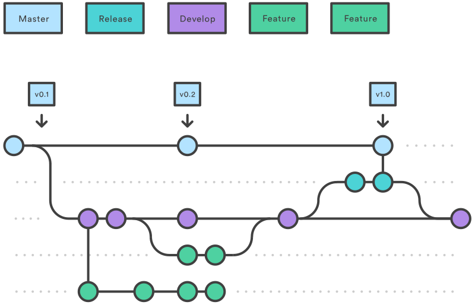

Git
- Clone from TFS
- Git flow
- Tools og Git 101
- Source tree
- GitFlow for Visual Studio
Migration TFS -> GIT
Oppskrift her
https://github.com/git-tfs/git-tfs/blob/master/doc/usecases/migrate_tfs_to_git.md
Det viktigste er å kjøre git tfs clone collection --with-branches
Men
- GIT TFS kan være problematisk på noen TFS repositories
- Clone uten historie kan være alternativ
Git flow
- En mulig branchingstrategi
- Centralized, Feature Branch, Forking
- Vincent Dressen, 2010

source: https://www.atlassian.com/git/tutorials/comparing-workflows/gitflow-workflow

source: https://www.atlassian.com/git/tutorials/comparing-workflows/gitflow-workflow
SourceTree
Open repository
GIT Clone
GIT Add Commit and Push
GIT Fetch Merge Pull
GIT Branches
SourceTree commit and push

GitFlow for Visual Studio
- godt alternativ til SourceTree om en ikke har node foldere i prosjektet https://visualstudiogallery.msdn.microsoft.com/27f6d087-9b6f-46b0-b236-d72907b54683
Erfaringer
- Mye kjappere
- npm og windows er ikke gode venner
- En bedre utvikler hverdag